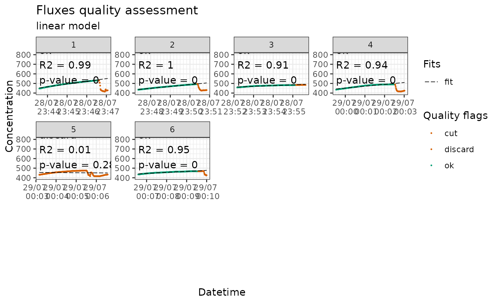
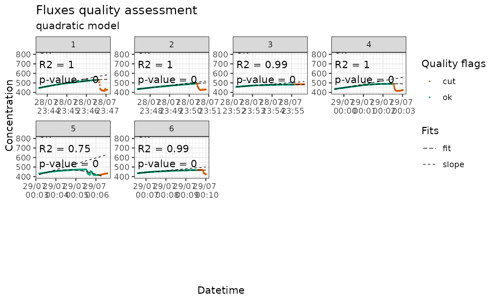

plotting fluxes for visual evaluation
flux_plot.Rdplots the fluxes, fit and slope in facets with color code indicating quality flags This function takes time to run and is optional in the workflow, but it is still highly recommended to use it to visually check the measurements.
Usage
flux_plot(
slopes_df,
color_discard = "#D55E00",
color_cut = "#D55E00",
color_ok = "#009E73",
color_zero = "#CC79A7",
f_date_breaks = "1 min",
f_minor_breaks = "10 sec",
f_date_labels = "%e/%m \n %H:%M",
f_ylim_upper = 800,
f_ylim_lower = 400,
f_plotname = "plot_quality",
facet_wrap_args = list(ncol = 4, nrow = 3, scales = "free"),
y_text_position = 500,
print_plot = "FALSE",
output = "print_only",
ggsave_args = list(),
cut_arg = "cut",
no_data_flag = "no_data"
)Arguments
- slopes_df
dataset containing slopes, with flags produced by flux_quality
- color_discard
color for fits with a discard quality flag
- color_cut
color for the part of the flux that is cut
- color_ok
color for fits with an ok quality flag
- color_zero
color for fits with a zero quality flag
- f_date_breaks
date_breaks argument for scale_x_datetime
- f_minor_breaks
minor breaks argument for scale_x_datetime
- f_date_labels
date_labels argument for scale_x_datetime
- f_ylim_upper
y axis upper limit
- f_ylim_lower
y axis lower limit
- f_plotname
filename for the extracted pdf file
- facet_wrap_args
list of arguments for facet_wrap_paginate
- y_text_position
position of the text box
- print_plot
FALSE or TRUE, if TRUE it prints the plot in R but will take time depending on the size of the dataset
- output
"pdfpages", the plots are saved as A4 landscape pdf pages; "ggsave", the plots can be saved with the ggsave function; "print_only" (default) prints the plot without creating a file (independently from 'print_plot' being TRUE or FALSE)
- ggsave_args
list of arguments for ggsave (in case
output = "ggsave")- cut_arg
argument pointing rows to be cut from the measurements
- no_data_flag
flag marking fluxID without data in f_quality_flag
Value
a ggplot object if print_plot = TRUE,
if print_plot = FALSE it will not return anything but will produce a file
depending on output
Examples
data(slopes0_flag)
flux_plot(slopes0_flag)
#> Plotting in progress
data(slopes30lin_flag)
flux_plot(slopes30lin_flag)
#> Plotting in progress

data(slopes30qua_flag)
flux_plot(slopes30qua_flag)
#> Part of the fit will not be displayed
#> because f_ylim_lower is too high.
#> Plotting in progress
